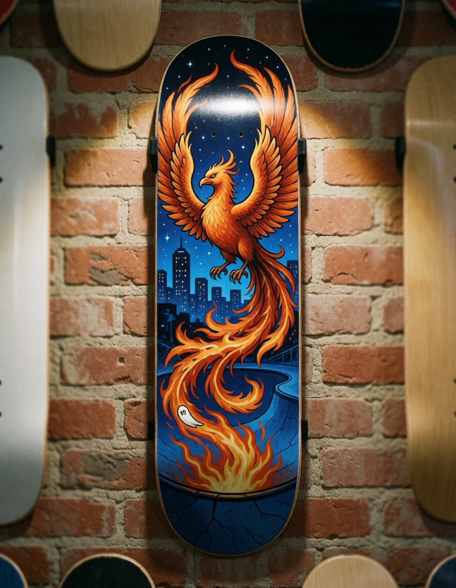

Eight tracks Riley "Riot" Navarro wrote in the notes app of her phone between the nine stairs and Saturday. She never meant anyone to hear them. Her little sister drew every cover anyway.
Words
Riot Navarro
Artwork
Nova Navarro
Thanks
D., Kenji, Old Faithful, and whoever she landed on
TRACKLIST
THE BOARDS
Nova paints Riot's decks and nobody else's. Dutch keeps asking to sell them. She keeps saying no.
Old Faithful The first thing Nova ever painted for her. Chipped to the wood, still rolling.

Saturday The same bird, years later. Nova finished it the night before the contest.